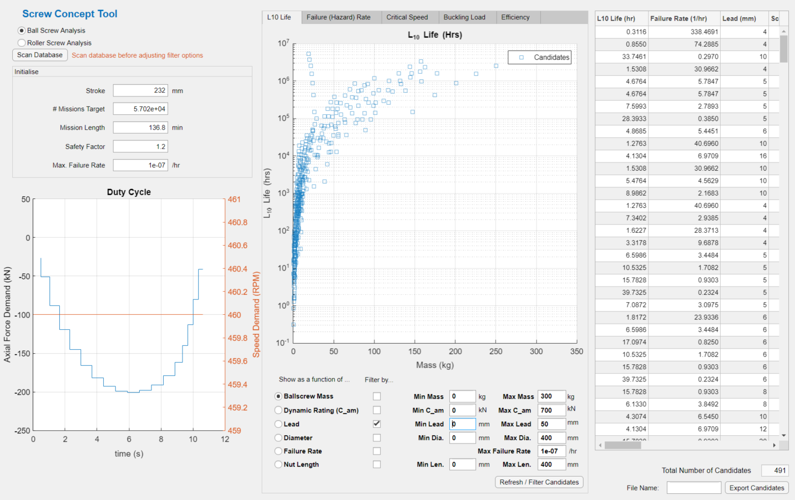

Application Design & Development
Below shows an example of the user interface (UI) for a actuation sizing application created in MATLAB. This example implements an ISO standard in order to run analysis on a database of actuator candidates and displays the potential candidates based on different selection criteria in the UI. Filteration of candidates based on additional performance metrics ensured thorough investigations could be carried out, while visualising the candidates in multiple dimensions.
